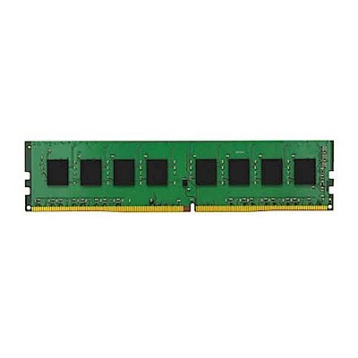

硬碟、記憶體
HARD DRIVE & MEMORY
Hard Drive - 硬碟
硬碟，ROM，是用來儲存大量的資料。
不同於RAM關機後會失去內部資料(揮發性 - volatile),硬碟(ROM)在電腦關機後仍保存資料(非揮發性 - non-volatile)
硬碟大概分為固態硬碟(Solid State Drive - SSD)以及傳統硬碟(Hard Disk Drive - HDD)。其特性可以用壽命、讀取速度、損壞後的救援難度
傳統硬碟(Hard Disk Drive - HDD)
壽命：通常使用很久讀取速度：比較慢(100MB/s)
損壞後的救援難度：較容易
其他：比較怕震動及撞擊
固態硬碟(Solid State Drive - SSD)
壽命：比較短讀取速度：較快(500MB/s)
損壞後的救援難度：較難
其他：分類: SLC、MLC、TLC。
有多種常見接口:SATA、M.2。
硬碟安裝指南
- SSD必須注意它採用的接口
- 一般最好的電腦硬碟配置都是SSD+HDD
- SSD用來裝系統與常大量讀取程式(遊戲或繪圖)
- HDD用來裝珍貴資料
- 如果有SATA3.0應優先使用
3D NAND？
3D NAND 是一種硬碟製造用到的堆疊技術。他可以讓單一記憶體單元容納更多位元
SSHD？
混合式硬碟Solid state hybrid drive (即混合SSD+HDD)的優點是雖然寫入和讀取的速度還是不比SSD的速度，但是相比HDD會更快快， 價格也只比HDD貴了一點
記憶體 - Memory
當cpu要處理程序時,必須大量及快速存取。但即使是固態硬碟SSD的速度也不夠快,因此記憶體便擔任了這個角色。記憶體會先把需要的資料從硬碟加載，再提供給cpu快速讀取。

單通道、雙通道以及多通道
其實把他想成馬路就可以了。如果一條馬路只有一個通道給10輛車行駛，那就很容易塞車。但是如果有4個通道給10輛車行駛，那麼就不會那麼擁擠了。
記憶體安裝指南
- 組雙通道需要同樣頻率的記憶體,但不一定為同容量,此外最好用同品牌的組雙通道
- 頻率越高越好,但是須注意cpu和主機板是否支援,否則會降頻到它們最高的支援頻率
- 每個主機板所支援的總共RAM容量上限也會不同
- 文書機4~8GB就夠用 遊戲機8~16GB就夠用 繪圖機可以用到16~32GB32位元作業系統只支援4GB
- 筆電的記憶體跟桌機的記憶體無法混用
- 一般新手也可以容易安裝,上面有防呆插槽,只要先搞清楚是DDR3還是DDR4的
DDR3 & DDR4
- DDR - Double Data Rate
- DDR'3' - 3rd Generation
- DDR'4' - 4th Generation
- DDR3 常見的兩種頻率: 1333 1600
- DDR4 常見的兩種頻率: 2133 2400 2666 3000 3200 3600
- 頻率越高，速度越快